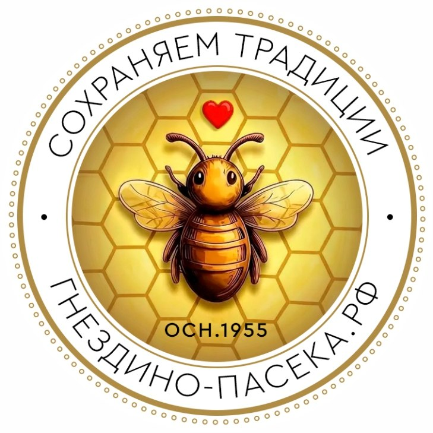

Гнездино-пасека
Спасибо, что Вы посетили страницу нашей пасеки. Здесь расскажем остальное: что это за место, кто обслуживает ферму и как мёд оказался в банке.
С чего всё начинаетсяИстория
Деревня Гнездино
Гнездино — место старое. Первое упоминание о деревне встречается в писцовых книгах XVI–XVII веков, и с тех пор она почти четыре столетия не выпадает из документов.
За это время менялись хозяева, дороги и даже название — деревню одно время звали Коратаево. Не менялось только место: луга у реки Тулицы, перелески и поля, которые из поколения в поколение обрабатывали одни и те же семьи.
- 1587–1678 Писцовые книги называют её «деревней Гнездина на реч. Тулице», Нюховский стан.
- 1720-е Гнездино — населённый пункт Тульского уезда. Помещик — Кирилл Елисеевич Крюков.
- 1857 В сельце при речке Малая (Синяя) Тулица живёт 144 человека.
- 1859 «Список населённых мест Тульской губернии»: владельческое сельцо Гнездино, оно же Коратаево — 15 дворов, 70 мужчин и 80 женщин. Стоит между Московским трактом и Венёвской дорогой, в 12 километрах от уездного города.
- 1910–1912 Подворная перепись Торховской волости: 76 дворов и 366 жителей — деревня выросла в пять раз.
- Сегодня Часть сельского поселения Рождественское, Ленинский район.
Для большого города это просто цифры. За ними — обычная жизнь: дома, огороды, скот, сенокосы, поля и люди, которые знали свою землю лучше любой карты. Наша пасека — продолжение той же истории, только более свежая её страница.
Мы находимся в 15км от областного центра города Тулы, в живописном и экологически чистом районе Тульской области. Деревня Гнездино издавна славится своими традициями пчеловодства. Мы бережно сохраняем их и с любовью продолжаем это благородное ремесло. Вся наша продукция производится вручную, что гарантирует соответствие самым высоким стандартам качества.
Фотографии
Пасека, ульи и всё, что вокруг
От ульев в лесу до мёда в банке. Нажмите на снимок, чтобы открыть его крупно.